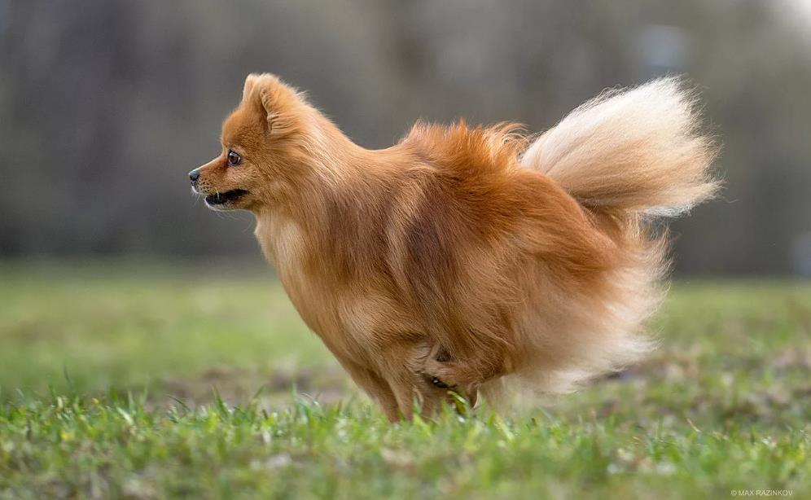

Кляйншпиц – самый первый, самый стандартный Немецкий шпиц, от которого пошли ветки Миттель, Гросс и Мини.

Именно эта порода – гарант стандарта: лисья морда, клиновидная голова, приземистое тельце квадратного формата, обильная жестковатая шерсть вокруг корпуса, шеи и хвоста, умеренно длинные конечности. Появились собаки в Германии, судя по раскопкам, еще в каменном веке.
Это истинно декоративная компанейская собака с задорным нравом. Она идеально подходит для условий городской квартиры, ведь вырастает не больше 30 см. Главная проблема Кляйнов – неугомонность. Песики живые, активные, ласковые, преданные, не злые. Им нужно общество, добрый хозяин и много вкусностей.